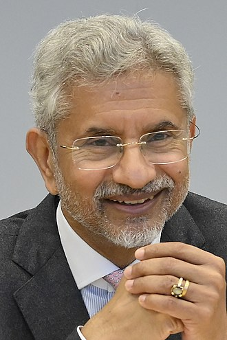

Subrahmanyam Jaishankar is an Indian diplomat and politician serving as the Minister of External Affairs of the Government of India since 30 May 2019. He is a member of the Bharatiya Janata Party and a Member of Parliament in the Rajya Sabha since 5 July 2019, representing Gujarat. He previously served as the Foreign Secretary from January 2015 to January 2018. He joined the Indian Foreign Service in 1977 and during his diplomatic career spanning over 38 years, he served in different capacities in India and abroad including as a High Commissioner to Singapore (2007–09) and as Ambassador to the Czech Republic (2001–04), China (2009–2013) and the US (2014–2015). Jaishankar played a key role in negotiating the Indo-US civilian nuclear agreement.
Early Life
Jaishankar was born in a Tamil Brahmin family, on 9 January 1955 in Delhi, India to prominent Indian strategic affairs analyst, commentator and civil servant K. Subrahmanyam and Sulochana Subrahmanyam. He has two brothers: the historian Sanjay Subrahmanyam and the IAS officer S. Vijay Kumar, former Rural Development Secretary of India. Jaishankar did schooling from The Air Force School, Subroto Park, New Delhi, and from the Bangalore Military School, Bangalore, Karnataka, and is a graduate in Chemistry from St. Stephen's College at the University of Delhi. He has an MA in Political Science and an M.Phil. and PhD in International Relations from Jawaharlal Nehru University (JNU), where he specialised in nuclear diplomacy.
Career
After joining the Indian Foreign Service in 1977, Jaishankar served as third secretary and second secretary in the Indian mission to the Soviet Union in Moscow from 1979 to 1981, where he studied Russian. He returned to New Delhi, where he worked as a special assistant to the diplomat Gopalaswami Parthasarathy and as undersecretary in the Americas division of India's Ministry of External Affairs, dealing with United States.

From 1985 to 1988 he was the first secretary at the Indian embassy in Washington, D.C. From 1988 to 1990, he served in Sri Lanka as First Secretary and political adviser to the Indian Peacekeeping Force (IPKF). From 1990 to 1993, he was Counsellor (Commercial) at the Indian mission in Budapest. Returning to New Delhi, he served as Director (East Europe) in the Ministry of External Affairs and as press secretary and speechwriter for President of India Shankar Dayal Sharma. Jaishankar was then Deputy Chief of Mission at the Indian Embassy in Tokyo from 1996 to 2000. This period saw a downturn in Indo-Japan relations following India's Pokhran-II nuclear tests as well as a recovery after a visit to India by then Japanese Prime Minister Yoshiro Mori. Jaishankar is reported to have helped introduce future Japanese Prime Minister Shinzō Abe to his Indian counterpart, Manmohan Singh. In 2000, he was appointed India's ambassador to the Czech Republic. From 2004 to 2007, Jaishankar was Joint Secretary (Americas) at the Ministry of External Affairs in New Delhi. In this capacity, he was involved in negotiating the US-India civil nuclear agreement and improving defence co-operation, including during relief operations following the 2004 Indian Ocean tsunami. Jaishankar was also involved with the conclusion of the 2005 New Defense Framework and the Open Skies Agreement, and he was associated with the launch of the US-India Energy Dialogue, the India-US Economic Dialogue, and the India-US CEO's Forum.In 2006–2007, Jaishankar led the Indian team during the negotiations on the 123 Agreement with United States.[30] He also represented the Indian government at the Carnegie Endowment International Non-proliferation Conference in June 2007.Jaishankar was reportedly considered for the post of India's Foreign Secretary in 2013.
| Role | Tenure |
|---|---|
| Ambassador of India to the Czech Republic | 1 January 2001 – 1 January 2004 |
| High Commissioner of India to Singapore | 1 January 2007 – 1 June 2009 |
| Ambassador of India to China | 1 June 2009 – 1 December 2013 |
| Ambassador of India to the United States | 1 December 2013 – 28 January 2015 |
| 31st Foreign Secretary of India | 28 January 2015 – 28 January 2018 |
| 30th Minister of External Affairs | 30 May 2019 - till date |